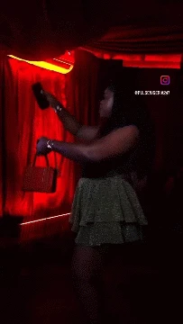

From runway to closing party: The House x Pulse x Lagos Fashion Week
A collaboration between The House, Pulse Creator Collective and Lagos Fashion Week, extended into an experience around the closing party.
| Role | Developed the collaboration |
| Partners | The House, Pulse Creator Collective, Lagos Fashion Week |
| Type | Cultural partnership, experiential marketing |
| Timeline | 2026, [ADD: dates] |
TL;DR: I developed a collaboration between The House, Pulse Creator Collective and Lagos Fashion Week, built on a shared audience and cultural relevance. It extended into an experiential opportunity around the Lagos Fashion Week closing party. [ADD: the headline result, for example creator content produced or reach]

The Lagos Fashion Week closing party. Watch the reel: https://www.instagram.com/reel/DfPiA_5CC0R/The opportunity
The House is [ADD: one sentence on what The House is]. Lagos Fashion Week is a meeting point for fashion, culture and media, and the opportunity was to bring The House and Pulse Creator Collective into that moment together. [ADD: what each party wanted from Lagos Fashion Week]
What I saw: a shared audience
I identified the shared audience and cultural relevance between the three partners. [ADD: who that audience is and how you knew, for example Pulse's creator audience data or The House's customers]
The decisions
Bringing in creators. I aligned the opportunity with Pulse's creators platform, Pulse Creator Collective. [ADD: why creators rather than standard media coverage]
Extending into an experience. I explored ways to extend the relationship into an experience, and the collaboration grew into an experiential opportunity around the Lagos Fashion Week closing party. [ADD: what the experience was, concretely, and what the creators did]
Visual: Hero
Show: A wide photo of the closing-party experience with The House and Pulse branding visible and creators in the frame.
Why: Shows the three-way collaboration in one image, which the current reel still does not.
Visual: System diagram
Show: A simple diagram of the three partners, what each contributed and what each gained, meeting at the closing party.
Why: Makes the partnership structure, the core of your contribution, understandable at a glance.
The result
The collaboration extended into an experiential opportunity around the Lagos Fashion Week closing party, documented on Instagram:
- Post: https://www.instagram.com/p/DfC8BUWCG-w/
- Post: https://www.instagram.com/p/De6juGYovsk/
[ADD: outcomes you can support, for example creator posts published, reach, or partner feedback, with source]
Visual: Annotated screen
Show: The two Instagram posts side by side, with callouts on the creator, the brands featured and the engagement.
Why: Turns the links into visible evidence of what the collaboration produced.
What I'd do differently
[ADD: one specific thing you would change, and why]
Before you publish
Placeholders to fill, in order:
- [ ] [ADD: dates]
- [ ] [ADD: the headline result]
- [ ] [ADD: one sentence on The House]
- [ ] [ADD: what each party wanted]
- [ ] [ADD: who the shared audience is and how you knew]
- [ ] [ADD: why creators]
- [ ] [ADD: what the experience was and what creators did]
- [ ] [ADD: supported outcomes with source]
- [ ] [ADD: one thing you would do differently]
Visuals to make (the sky blue boxes above):
- [ ] Hero: wide photo of the closing-party experience
- [ ] System diagram: three partners, contributions and gains
- [ ] Annotated screen: the two Instagram posts with callouts